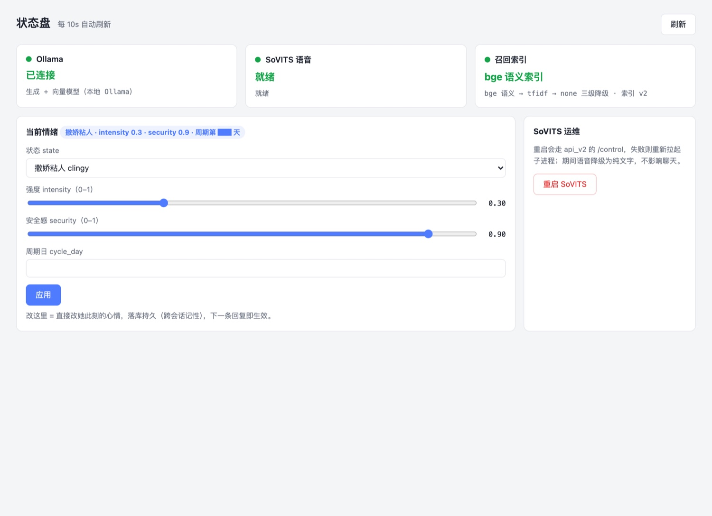
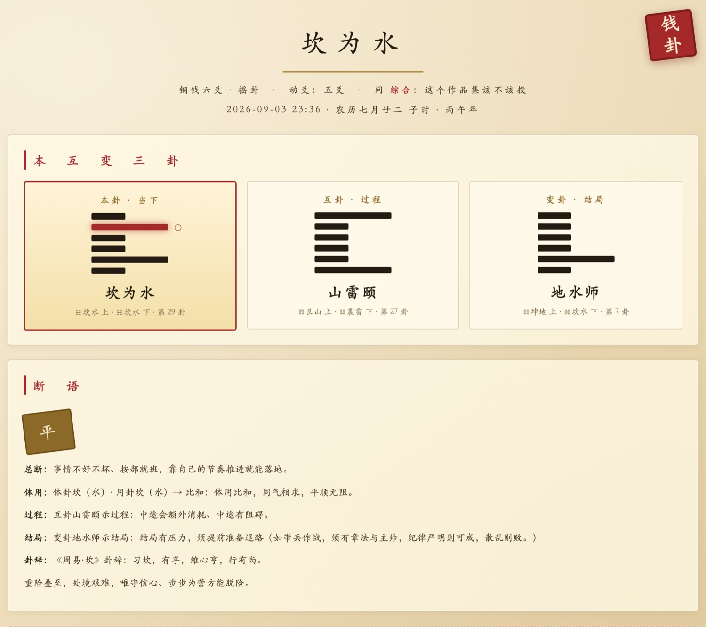

我自己写的第一版 PRD，验收标准里有一句"用户体验流畅"。评审会上这句话根本没法讨论—— 多流畅算流畅？谁来判？后来我发现 AI 写 PRD 会成批产出这种句子， 而且版式上和真正的验收标准长得一模一样。
全文 Grep 13 条红线与空洞形容词表。机械可判，命中即改写成量化表述再重扫。
14 项逐条核对。最关键的是数据引用查验：引用调研数据必须有来源，否则强制标"假设值，需验证"。
起一个独立上下文的评审子代理，只喂 PRD 全文与 rubric，不喂生成过程。
放行条件是 P0 清零，不看分数。分数是连续值容易被写得好看拉高，P0 是离散硬伤。 重写最多 2 轮，修不好就交人裁决——不死循环，不谎报通过。
常见做法是把聊天记录一股脑塞进提示词或者微调。结果两个问题耦合在一起： 语气像不像，和内容瞎不瞎编。混在同一个机制里，调好一个必然弄坏另一个。
只管语气风格——怎么说话。
只管不瞎编——说什么是真的。
改人格不影响事实准确性，改检索不影响说话风格。
检索走三级降级：bge 语义向量 → 字符级 TF-IDF → none。 embedding 要模型服务在线，服务一挂纯 embedding 方案直接不可用； TF-IDF 零依赖可冷启动，中文短文本上效果并不差。代价是多维护一条链路， 换来可用性不依赖单点。

起点是一个开源的八字 skill，功能完整，但只有装了命令行工具的人才能用。 它的潜在用户被工具门槛挡在外面。我做的是把同样的算法换成任何人打开浏览器就能用的形态。
纯 HTML/CSS/JS，历法库 vendor 到本地。没有构建产物就没有构建失败，十年后还能打开。
AI 深读用用户自带 key，只存本机。不碰用户密钥；规则引擎不依赖 AI，不填 key 照样能用。
年柱以立春为界、23:00 后日柱算次日，与原 skill 一致。同一个人两处算出不同结果，产品就废了。

在千方，问题是"模型说有事故，能信吗"；在理想，是"它把任务拆错了，怎么知道是谁的错"； 在字节，是"这个模型到底行不行，凭什么这么说"。三次都在给"好"下定义。
手机助手与可穿戴硬件的大模型评测。设计了多 Agent 前置环境生成工作流， 把拿不到的隐私数据"造"出来，一次通过率 90.4%，现为团队评测集构建的固定一环。
车载 Agent 的任务规划链路与评测体系。难的不是把一句话拆成 7 步， 是拆错了以后能定位到是谁错了——所以定了「黄金 schedule」diff 判定机制。 工具调用准确率 78.3% → 95.4%。
在高速监控中心跟班三天。那三天教会我一件后来一直在用的事： 指标是可以被"用错误的方式"做上去的——只看告警采纳率，系统靠"少报"就能刷高比率。